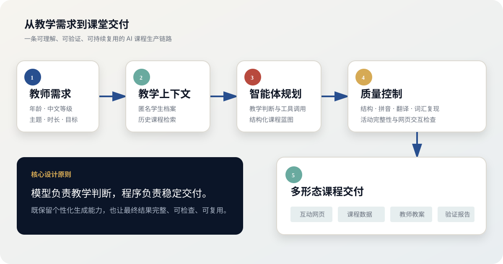

PORTFOLIO CASE STUDY · 2026
From one teaching brief
to a lesson students can use.
An AI Chinese lesson design agent that combines learner context, structured planning, classroom interaction and deterministic quality checks.
01 · SYSTEM
Model judgment, controlled delivery
The agent reasons about pedagogy. Typed schemas and deterministic code keep the final package complete and reviewable.
02 · SELECTED OUTPUT
Open the classroom experience
Three final lessons show how the same system adapts to level, learner goal and teaching context.
PRE-HSK · 4 SESSIONS
Four-Session
Pinyin Lab
Audio practice, English pronunciation cues and a progressive four-class pathway.
Open interactive lesson →
HSK 2–3 · REAL-LIFE TASK
First Visit
to Haidilao
Service flow, useful restaurant language, menu choices and a final role-play.
Open interactive lesson →●REC
HSK 2–3 · CREATOR CHINESEChinese for
Social Media
A tailored creator workflow with camera phrases, script rehearsal and interactive reading.
Open interactive lesson →03 · RESPONSIBLE PORTFOLIO
Built to demonstrate the work without exposing the classroom.
- Fictional learner profile only
- No API keys or environment files
- No private production prompts
- No real student records